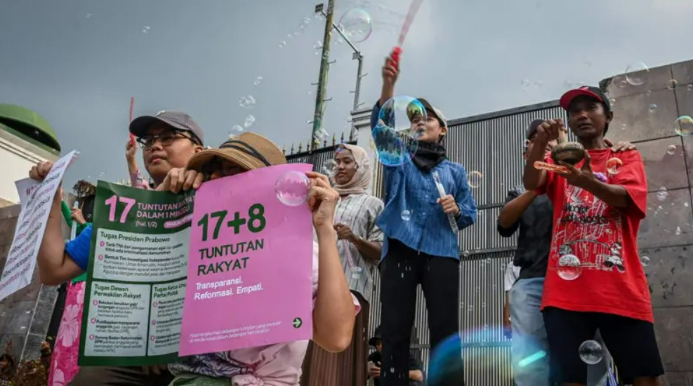

17+8 Tuntutan Rakyat
Transparansi. Reformasi. Empati.
17 Tuntutan
8 Tambahan
Pantau Janji
Media
Makelar Partai
17 Tuntutan
8 Tuntutan Tambahan
Media
Artikel Kompas: DPR Jawab Tuntutan 17+8 Rakyat, Umumkan 6 Poin Keputusan

Artikel BBC: Apa itu tuntutan 17+8?
Ikutan Nimbrung
Twitter
Tweets by DPR RI
YouTube